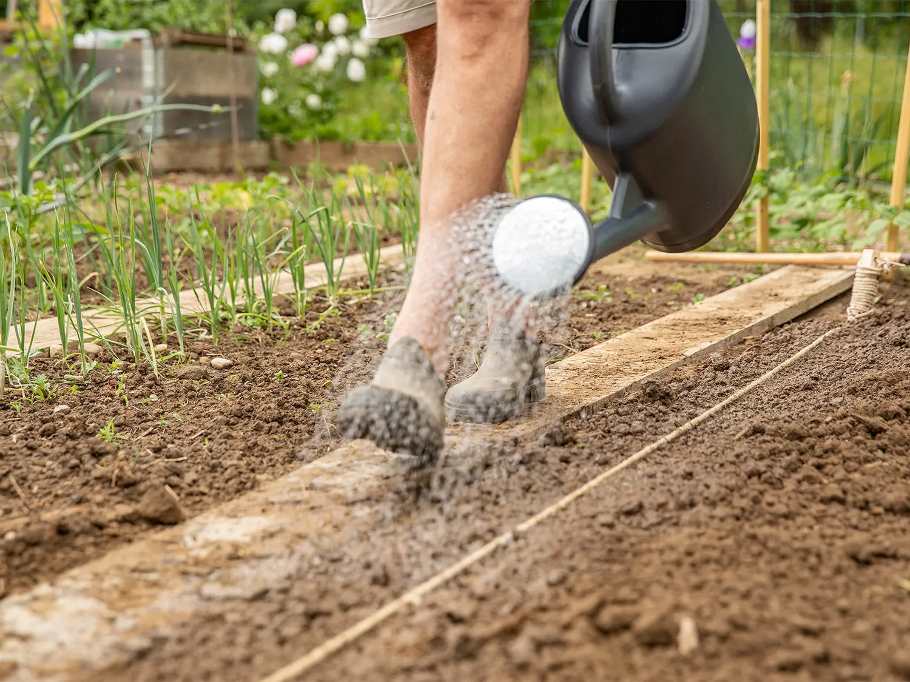
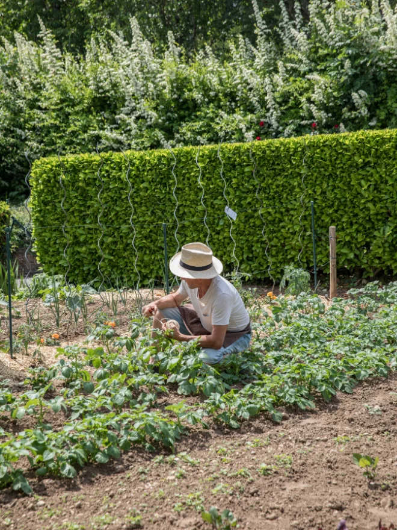
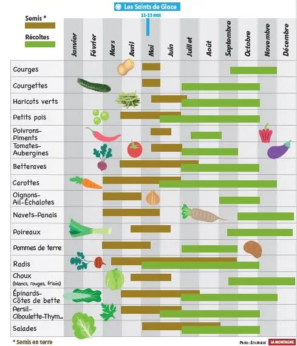
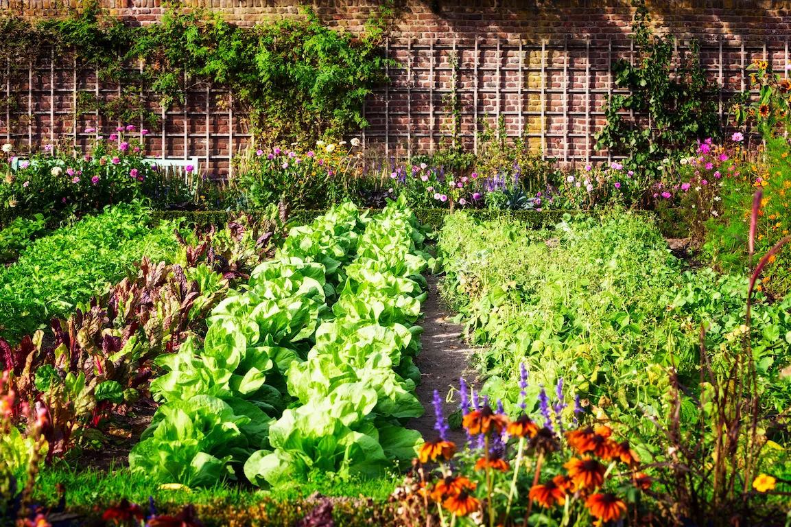

La rotation des cultures numériques : comment renouveler votre potager pour éviter l’appauvrissement de l’accessibilité
Paris Web 2026, Lena Chandelier
Transcript : https://tinyurl.com/potager2
ou
Remise en contexte
- Initiative personnelle
- Aucune obligation légale
- Pas officiellement Référente Accessibilité Numérique (RAN) à l'époque
- Nommée RAN quelques mois après la conférence
Ce que je retire comme expérience
Un·e RAN est là pour mettre en place la culture de l’accessibilité numérique et faire en sorte que le maximum de personnes dans l’entreprise soit autonome dans sa mise en pratique.
La base : planter les graines
- Sensibiliser y compris au plus haut niveau
- Organiser des ateliers (refresh, aide approfondie sur un sujet)
- Renouveler chaque année
- Découverte d'allié·e·s
- Enthousiasme inégal
Arroser régulièrement (aka communiquer)
- Utiliser différents canaux
- Fournir / créer des outils
- Newsletter pour les avancées ponctuelles
- Créer un groupe d'allié·es
- Événement de type all hands
- Communiquer auprès du grand public

Observer les récoltes (Monitorer)
Avoir des indicateurs va aider à voir la progression du sujet :
- Personnes sensibilisées / formées spécifiquement
- Tickets avec leur temps de résolution
- Liste des projets avec leur niveau d'accessibilité

Faire son calendrier des plantations (Anticiper, beaucoup !)
Il faut savoir où planter quoi et quand.
- Formation reportée de plusieurs mois
- Corrections post audit qui prennent une éternité
Il faut prendre sa place et aller voir les personnes responsables pour anticiper au mieux !
Rares sont les personnes qui viendront vous voir spontanément.

Prendre soin de la personne qui jardine
C’est un travail qui fait grandir, on apprend plein de choses personnellement :
- Lâcher prise
- Se faire accompagner par des entreprises spécialisées
- Se former sur ce qu'on ne sait pas
- Consulter ses allié·e·s
- Célébrer les victoires
- Se protéger
- Être résilient·e
Conclusion : Pourquoi la rotation des cultures numériques ?
- Cultiver toujours la même chose au même endroit finit par épuiser la terre.
- L'accessibilité portée une seule personne n'est pas pérenne (et épuise celui ou celle qui jardine).
- On va planter des graines à différents endroits chaque année.
- On sensibilise et accompagne de nouvelles personnes régulièrement.
- Bon entretien de la terre = meilleures récoltes
- Accessibilité pérennisée = meilleurs services
Merci
